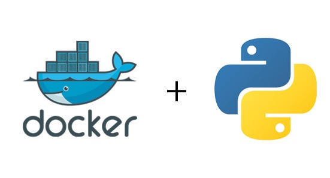

🐳Clase 2: Docker y Python🐳#

¿Qué es Docker?#
Docker es una plataforma que permite desarrollar, enviar y ejecutar aplicaciones dentro de contenedores. Un contenedor es un entorno ligero y aislado que contiene todo lo necesario para que una aplicación funcione de forma consistente en cualquier lugar.
¿Qué es Python?#
Python es un lenguaje de programación interpretado, de alto nivel y propósito general conocido por su legibilidad y versatilidad. Su filosofía de diseño enfatiza la simplicidad y la legibilidad del código, lo que permite a los desarrolladores expresar conceptos en menos líneas que en otros lenguajes. Python es ampliamente utilizado en análisis de datos, inteligencia artificial, desarrollo web, automatización, y prácticamente en cualquier campo de la programación.
Python y Docker#
La combinación de Python y Docker resuelve muchos desafíos comunes en el desarrollo de software. Python, con su diversidad de versiones y dependencias, a menudo enfrenta el problema de “funciona en mi máquina”. Docker soluciona esto al empaquetar la aplicación Python junto con todas sus dependencias en un contenedor, asegurando un comportamiento uniforme en diferentes entornos. Esta combinación es particularmente valiosa para equipos que trabajan en proyectos científicos o soluciones de analitica de datos, donde la consistencia del entorno es crucial para obtener resultados reproducibles.
¿Por qué usar Docker?#
Aislamiento: Cada contenedor cuenta con sus propias dependencias y librerías, evitando conflictos con otras aplicaciones.
Reproducibilidad: Las aplicaciones se ejecutan de la misma manera indistintamente del sistema operativo anfitrión.
Escalabilidad: Es sencillo replicar un contenedor y desplegarlo en distintos entornos sin configuraciones extra.
Portabilidad: Se puede exportar e importar contenedores sin importar la infraestructura subyacente.
Conceptos Clave#
Imagen: Conjunto de capas que incluyen el sistema de archivos y la configuración necesarios para ejecutar un contenedor.
Contenedor: Instancia de una imagen que se ejecuta de forma aislada y que puede crearse, iniciarse o detenerse fácilmente.
Dockerfile: Archivo que describe paso a paso cómo se construye una imagen (instrucciones sobre instalación de paquetes y configuraciones).
Registro de imágenes: Repositorio donde se almacenan y comparten imágenes de Docker (ej. Docker Hub).
Principales Comandos de Docker#
Los comandos esenciales para trabajar con Docker son:
docker pull <imagen>: Descarga una imagen desde un registro.docker run <imagen>: Crea y ejecuta un contenedor basado en la imagen.docker ps: Lista los contenedores en ejecución.docker stop <contenedor>: Detiene un contenedor en ejecución.docker rm <contenedor>: Elimina un contenedor detenido.docker build -t <nombre_imagen> .: Construye una imagen desde un Dockerfile.
Comandos Detallados#
docker pull <imagen>Descarga una imagen desde un registro.--all-tags, -a: Descarga todas las etiquetas disponibles de la imagen.
docker run <imagen>Crea y ejecuta un contenedor basado en la imagen indicada.--detach, -d: Ejecuta el contenedor en segundo plano.-it: Permite una terminal interactiva.--volume, -v: Monta un volumen.--name: Asigna un nombre personalizado al contenedor.--rm: Elimina automáticamente el contenedor cuando se detiene.
docker psLista los contenedores en ejecución.--all, -a: Muestra todos los contenedores (no solo los activos).
docker stop <contenedor>Detiene un contenedor en ejecución.--time, -t: Segundos a esperar antes de forzar la detención.
docker rm <contenedor>Elimina un contenedor que ya se ha detenido.--force, -f: Fuerza la eliminación de un contenedor en ejecución.
docker build -t <nombre_imagen> .Construye una imagen usando un Dockerfile presente en el directorio actual.--no-cache: No usa la caché durante la construcción.--file, -f: Nombre del Dockerfile (por defecto es ‘Dockerfile’).
Usos de Docker en Python#
Entornos de desarrollo: Facilita la creación de entornos personalizados que incluyan la versión de Python y las dependencias necesarias para cada proyecto.
Pruebas y validación: Se pueden ejecutar tests en contenedores limpios, reproduciendo condiciones idénticas sin afectar la configuración del sistema local.
Despliegue en producción: Una vez validada la aplicación, se despliega el mismo contenedor en el entorno de producción, lo que reduce los errores por diferencias de configuración.
Recomendaciones al Trabajar con Docker y Python#
Incluir siempre un archivo con las dependencias (por ejemplo,
requirements.txt,pyproject.tomloenvironment.ymlpara Conda) para que la instalación sea clara y reproducible.Considerar Conda como alternativa para gestionar entornos Python dentro de contenedores, especialmente para proyectos científicos o con dependencias complejas.
Al usar Conda con Docker, preferir imágenes base como
continuumio/miniconda3que ya incluyen el sistema de gestión de paquetes preinstalado.Mantener las imágenes lo más ligeras posible para disminuir tiempos de descarga y consumo de recursos.
Usar herramientas de orquestación como Docker Compose o Kubernetes para coordinar varios contenedores (ej. bases de datos, servidores web, etc.).
Conclusión#
Docker ha transformado radicalmente la forma en que desarrollamos, probamos y desplegamos aplicaciones, tanto en Python como en otros lenguajes. Al encapsular cada entorno en contenedores, se garantiza una ejecución uniforme y predecible en cualquier plataforma, eliminando de raíz el clásico problema de “en mi máquina funciona”.
Ventajas Destacadas#
Uniformidad: Garantiza ejecución idéntica en cualquier plataforma, simplificando la depuración.
Eficiencia: Contenedores más ligeros y rápidos que máquinas virtuales, optimizando recursos.
CI/CD: Integración fluida con pipelines de desarrollo automatizado.
Microservicios: Facilita arquitecturas modulares con componentes independientes.
Persistencia: Mediante volúmenes, separa código inmutable de datos persistentes.
Para los desarrolladores de Python, Docker no solo resuelve problemas históricos relacionados con la gestión de versiones y conflictos de dependencias, sino que establece un flujo de trabajo moderno y robusto. En un mundo cada vez más orientado hacia infraestructuras cloud-native y metodologías ágiles, Docker se consolida como una herramienta esencial en el ecosistema DevOps, facilitando procesos de desarrollo más eficientes, colaborativos y escalables.